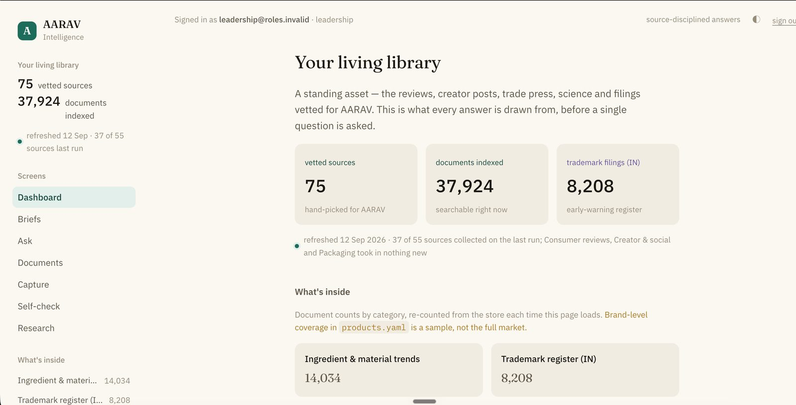
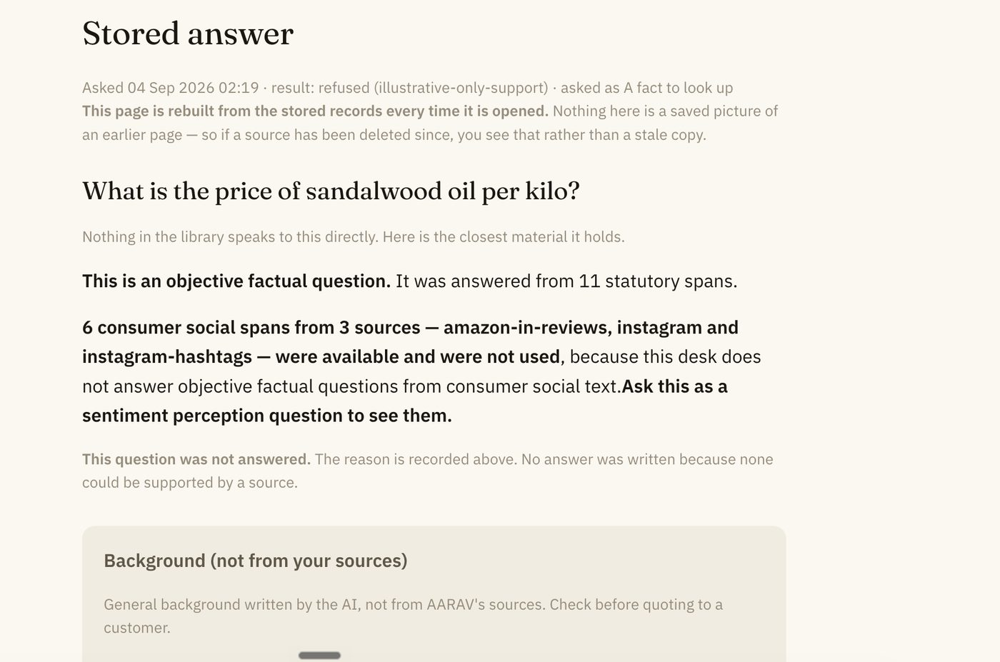
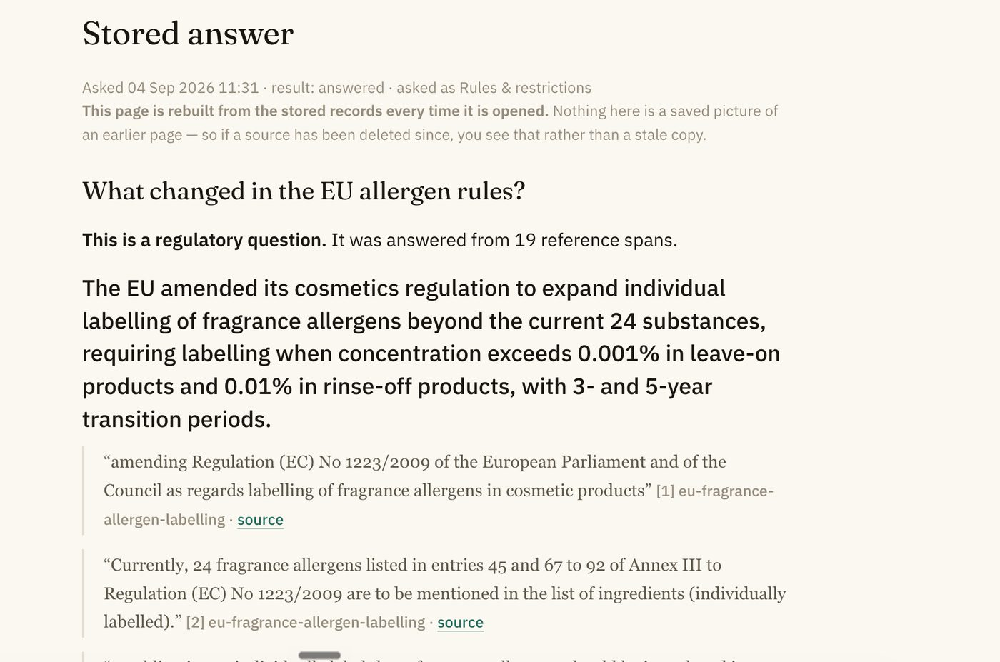

The landing screen. Every number on it is counted again from the store each time the page loads.
What it is
AARAV makes fragrances and flavours. Its sales and R&D teams needed to know what was moving in their market: which materials, which rules, which launches, what Indian buyers were saying. That knowledge was spread across seventy-five places, and nobody had time to read them all.
COMPASS reads them. Every night it goes out to trade journals, rulebooks, scientific papers, review sites, creator channels and India's trademark journal, and brings back whatever is new. It files each document, works out what it is about, and keeps it so that a question can find it later.
When someone asks a question, it does not answer from a model's general memory. It goes to its own shelf, finds the passages that bear on the question, and quotes them back with the source attached. If the shelf does not hold the answer, it says so.
One night
At three in the morning UTC, half past eight in India, nobody is watching. This is what happens anyway.
- 1
It collects
Fifty-five source lanes open at once: publisher feeds, newsletters arriving in a mailbox kept only for this, official interfaces, and public pages checked for change. Each lane records what it found, and records just as loudly when it found nothing or failed.
- 2
It keeps the original
Each document is stored word for word and never edited. Everything the system works out later sits beside it, so any answer can be checked against its source years from now.
- 3
It gathers duplicates into one story
The same piece run in four regional editions becomes one story with four sources under it.
- 4
It reads
Each new story is tagged against a fixed vocabulary of materials, brands, regulations, claims and regions. The night has a hard spending ceiling. If the reading would cost more, the newest material goes first and the rest waits for tomorrow.
- 5
It checks itself
A separate pass asks whether the system is telling the truth about itself. Did every lane that says it ran store anything? Has a source gone quiet? Did the night cost more than it said?
- 6
It writes the morning brief
At half past nine India time, one brief for each role. What changed for the person reading it, with the gaps named.
What the library held on 12 September 2026
75
vetted sources
37,924
documents indexed
33,661
stories
13,806
documents read and tagged
8,208
Indian trademark filings
548
collection runs
The counts are uneven on purpose. Trade-flow data arrives monthly for every commodity and every pair of countries, so it counts in thousands. A wellness newsletter comes once a week. A count measures how loudly a source speaks, not how much it matters.
How it says no
Inside COMPASS is a grid that decides, for every kind of question, which kinds of evidence may answer it. The code enforces it. A passage from the wrong kind of source cannot reach the answer, however well it matches the words.
| Evidence | A rule | A fact | A move | An opinion | Open |
|---|---|---|---|---|---|
| Law and standards | answers | colour | answers | colour | answers |
| Reference texts | answers | answers | colour | colour | answers |
| Science | colour | answers | colour | colour | answers |
| Trade press | colour | answers | answers | colour | answers |
| Company announcements | colour | colour | answers | colour | answers |
| Reviews, creators, social | barred | barred | colour | answers | colour |
| AARAV's own documents | colour | barred | answers | colour | answers |
Look at the row for reviews and creators. A blogger's opinion or a buyer's review can never answer whether an ingredient is banned. The library holds thousands of passages where someone says a material is "not allowed any more". They are useful for knowing what buyers believe. They are unfit to answer a regulatory question, and a system without this grid would quote one to a customer with confidence.
It declines in three ways. It found nothing. It found things it may not use for that kind of question, and says how to ask instead. Or the publisher's own terms do not allow the material to be collected, in which case it names the company and shows the clause and the date it was read.


Every claim carries its sentence
An answer is a set of claims, and each one is tied to the exact sentence in the source that supports it. That sentence is checked against the stored original before it is shown. If the check fails, the claim does not appear.
This is why the answers are shorter than people expect, and why a salesperson can forward one to a customer.
What it is made of
- Collectors built on Apify, Zyte, Firecrawl, RSSHub and custom Python, scheduled with n8n.
- Postgres with pgvector as the library, with originals and derived data kept apart.
- A frontier language model for reading, answers, morning briefs and the research desk, with Exa for semantic search.
- An open MCP endpoint, role-based access, daily spending limits shown in rupees, and retention clocks that log every deletion against the term it was made under.
- All of it on AARAV's own server, inside its network.